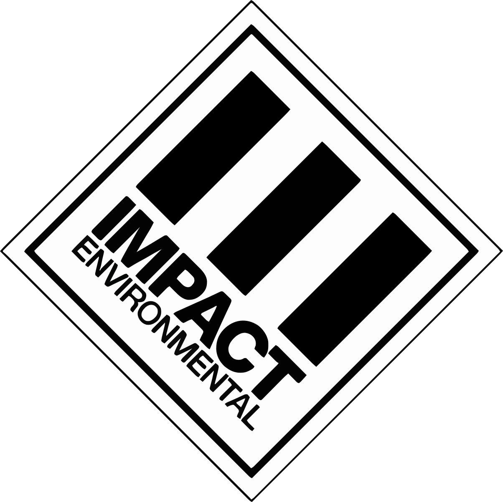

AI ADOPTION ASSESSMENT INTERNAL — LEADERSHIP USE APRIL 2026A Research-Backed Evaluation for Leadership Decision-Making
Can AI meaningfully accelerate Impact Environmental's technical and administrative workflows — without compromising data security, regulatory accuracy, or professional standard of care?
This report evaluates Claude Teams — Anthropic's commercial AI platform — against Impact Environmental's actual division workflows, using documented productivity evidence from professional services firms.
The evidence supports a disciplined pilot. The benefits clearly outweigh the investment at any reasonable estimate of time saved. The risk is manageable with proper guardrails. The window for competitive differentiation is now.
Section 1 — Product Overview
Claude Teams is Anthropic's commercial AI subscription for organizations of 5–150 people. It sits between Claude Pro (individual, $20/mo) and Claude Enterprise (large enterprise, custom). The critical distinction: Team plan customers operate under Anthropic's Commercial Terms of Service — meaning Anthropic is contractually prohibited from training its models on your firm's data. This protection does not apply to individual or free accounts.
Section 2 — Interface Modes
Claude Teams provides multiple interfaces — each suited to different workflows and roles. Standard seats include everything except Cowork.
The core web interface. Upload PDFs, Word docs, Excel files, CSVs, and images (up to 20 files / 30MB each). Ask questions, generate drafts, analyze data, and download polished outputs — all in one conversation.
Create persistent workspaces loaded with firm documents — regulatory guidance, report templates, SCO tables. Claude references them in every conversation within that Project. Share read-only with field staff; keep editing rights locked to seniors.
Sidebar inside Excel. Reads entire multi-tab workbooks, writes formulas, builds pivot tables and charts, flags QA/QC exceedances, and tracks every change with comments. Overwrite protection built in.
Reads your slide master — fonts, colors, layouts. Generates or edits slides that respect Impact's branding. Converts bullets into diagrams. Carries Excel context directly into presentation slides with no copy-paste.
Newest plugin (April 2026, Team & Enterprise). Review, redline, and draft directly inside Word. Ideal for agency correspondence, report section drafting, and regulatory submittal review — without leaving your Word workflow.
Included with Standard seats. Operates inside the Claude Desktop app on Mac and Windows, executing multi-step tasks autonomously on your local machine. Reads entire folders of files, compiles summary tables from multiple documents, merges PDFs, flags analytical exceedances across datasets — all without manual coordination between apps. Supports scheduled and recurring tasks: configure a weekly regulatory update sweep or a daily field report compilation to run automatically. Unlike Chat, Cowork accesses your local drive directly with no file upload limits, making it ideal for bulk document work.
Section 3 — Division Applications
Mapped to Impact Environmental's actual divisions and job functions. Every use case is grounded in Claude's documented capabilities — not marketing claims.
Example Workflow
This is how Claude fits into a real Phase II analytical data package workflow — not replacing professional judgment, but eliminating the mechanical hours before and after it.
Section 4 — The Evidence
No environmental consulting firm of Impact's profile has a published Claude Teams deployment study. The strongest evidence comes from 758 BCG consultants in a rigorous Harvard study and documented deployments at major professional services firms. These are the most relevant data points available.
758 BCG consultants using AI on realistic knowledge work tasks: market analysis, report writing, data synthesis.
Harvard Business School / BCG Study, 2023 — peer reviewed
AI-assisted work was rated significantly higher quality by blind evaluators — not just faster, but better.
Harvard Business School / BCG Study, 2023 — peer reviewed
McKinsey's "Lilli" platform achieved 72–75% active monthly adoption, reporting 30% time savings on research and knowledge synthesis.
McKinsey & Company internal reporting, 2024
Bottom-half performers in the BCG study showed the largest gains — 43% quality improvement. AI levels the experience gap.
Harvard Business School / BCG Study, 2023 — peer reviewed
Deloitte deployed Claude firm-wide in October 2025 — the largest Claude enterprise deployment to date. Accenture is training 30,000 practitioners.
Anthropic / Deloitte announcement, October 2025
FlipType (2024 EBJ Technical Innovation Award winner) claims AI reduces Phase I ESA initial draft generation from 20+ hours to under 5, with the Environmental Professional completing and reviewing the work.
Environmental Business Journal, 2024 — single vendor claim, treat as directional
Section 5 — Data Security
For a firm handling pre-litigation materials, confidential site data, and regulatory correspondence, this is non-negotiable. Claude Teams addresses it contractually — not just in settings.
Anthropic is contractually prohibited from training models on Team/Enterprise customer data. This is in the Commercial Terms of Service — not a toggle you set.
Also ISO 27001:2022 and ISO/IEC 42001:2023. Data is stored with standard 30-day backend retention; deleted conversations purge within 30 days.
Central admin console with spend limits, usage monitoring, SSO via SAML/OIDC, domain capture, and role-based permissioning across the organization.
A Data Processing Addendum is available on request for commercial customers requiring formal data processing agreements with suppliers.
Data Classification Framework — What Goes In, What Stays Out
Section 6 — Guardrails & Limits
Claude is a capable but inherently imperfect tool. All LLMs can generate confident-sounding but factually wrong outputs. In October 2025, Deloitte submitted an AI-generated report to the Australian government containing fabricated sources. This is not a hypothetical risk. The guardrails below are non-negotiable.
Section 7 — Implementation
A phased approach builds internal evidence before full commitment — and gives leadership a concrete ROI baseline from real workflows before scaling.
Before Anything Else: Two Non-Negotiable Starting Points
These two deliverables should be developed in parallel with account setup — before any employee logs in for the first time. They are the foundation everything else is built on.
A well-designed policy doesn't just establish guardrails — it creates permission to explore. The goal is a document that is clear enough to protect the firm and flexible enough to encourage every employee to find their own best uses. Overly restrictive policies breed workarounds; overly vague ones breed liability. Get the balance right from the start.
Impact Environmental's team spans a wide range of technical comfort levels — from employees who live in the terminal to those who prefer a phone call over email. Training materials need to meet every employee where they are, not where leadership wishes they were. One-size training produces half-adoption.
Section 8 — Creative Development
The firms that get the most from AI aren't the ones with the most features — they're the ones whose people actually built something personal. Every team member has a task that quietly steals an hour of their day. The goal isn't just using Claude — it's designing a workflow so tailored to how you work that it feels like a tool you invented yourself.
The Creative Loop
Find Your Creative Mode
A Skill is just a saved prompt + workflow — no code, no setup. Anyone on the team can build one in a single session. Here's how.
Section 9 — Frank Assessment
Six observations that don't appear in the vendor marketing — but should inform the adoption decision.
The environmental consulting sector is in early-stage AI adoption. No peer firm of Impact's size and specialization has a published deployment playbook. Firms that build disciplined AI workflows now will have a structural efficiency advantage that compounds over time.
As larger competitors automate routine knowledge work, firms without AI workflows will face a cost-per-deliverable gap. The question in 3–5 years won't be whether to use AI — it will be whether you built the habits early enough to be good at it.
Of all the features available at Standard tier, the Claude for Excel plugin applied to analytical data table work is the highest-ROI, lowest-risk starting point for Impact Environmental. It's where the most mechanical hours currently go — and where Claude is demonstrably strongest.
With Claude Code and Cowork both included on Standard seats, there is no need to purchase Premium for most staff. Premium's only meaningful differentiator is a 6.25× higher usage multiplier — worth considering for heavy daily users, but most consulting roles will not hit Standard limits under normal workloads.
The Harvard/BCG study found the largest productivity gains among less experienced workers — 43% quality improvement. For Impact, this means Claude can close the gap between junior and senior output faster, which has direct implications for training burden, billing rates, and staff development.
The single biggest implementation risk is employees using Claude Teams without understanding the data classification rules. A one-page AI Usage Policy — distributed before the first login — is not optional. It's the only thing standing between appropriate use and a confidentiality incident.
Every hour spent formatting tables, drafting boilerplate, and organizing data is an hour not spent on the work that actually requires expertise. Claude Teams gives Impact Environmental's people that time back — and the creative capacity to do more with it. The firms that move first build the workflows, the habits, and the competitive edge. That window is open now.